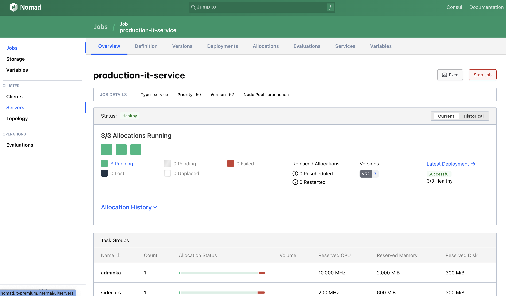
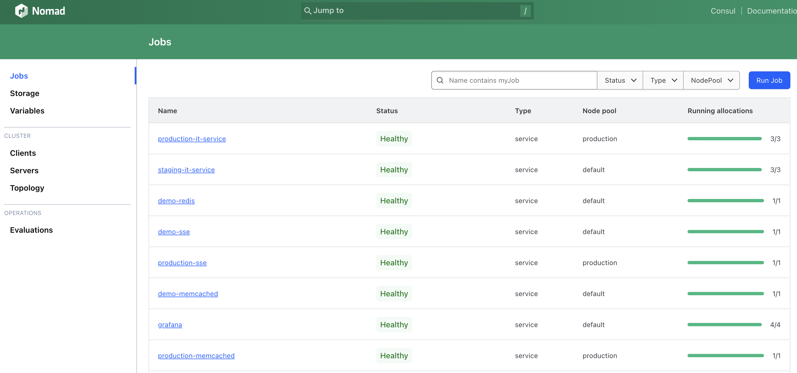
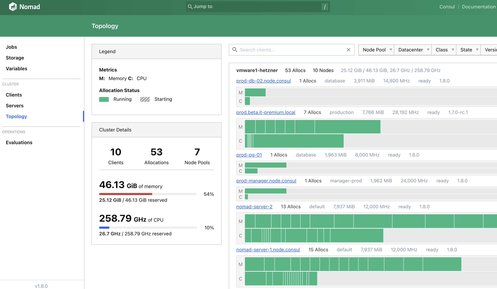

As, probably, many of you, I did a long journey from manual FTP sync, to semi-automated tools like Capistrano, then manually managed docker deployments, then anisble managed docker containers and finally, met the orchestration system of choice - Hashicorp Nomad.
TLDR: Kubernetes is too heavy for my moderate needs. Hashicorp Nomad strikes the right balance between features and maintenance complexity.
At some point in time I felt a need for better container orchestration system that I could run by myself in Hetzner. Funny enough, DHH and Co. came to the same conclusion, but implemented in a different way. They developed completely own version of ansible on steroids named Kamal. This has right for existence, but imho has own flaws, like manual nodes management for fault tolerance and challenge to keep versions of deployed artifacts in sync.
The push based deployment always suffers from this. People were trying to solve this issues already for quite a long time by using systems like Chef of Puppet.
The modern world is all about containers. But what options do we have for orchestration?
Kubernetes. Apache Mesos. Docker Swarm. Every option requires quite extensive knowledge just to maintain it.
This is what happens when I merge to the main branch.
This is it! I fond of simplicity and power of the HCL language for the configuration. It also integrated with Hashicorp Vault out of the box, so my secrets provisioning looks like this.
For my ephemeral environments I have the HCL configuration that also brings me mysql and redis containers. When the application starts, init container is responsible for creation of DB schema and populating the ephemeral database with sample data using seeds screept.

The whole deployment to ephemeral environment I've just described takes 44s.
Less than a minute to setup: MySQL 8, Redis, Sphinx Search and populate with the sample data (every run with new data!). After the PR is closed, the ephemeral environment is gone as well.


Nomad topology management
What makes Hashicorp Nomad so powerful?
Easy to start. It's really just a single binary!
Integration with Hashicorp Consul for service discovery
Integration with Hashicorp Vault for secrets management
Traefik is excellent option for load balancing integrated through Consul
HCL configuration language is what powers Terraform. Way better than YAML!
It's not only for Docker containers, same concepts to deploy and run bare Java jars.
P.S. One of the thing I discovered to be particulary challenging is to spin up containers with restiq for backups, the nodes with necessary volumes can be full, therefore the container just can't be spined up. For now monitoring somehow saves , but a good solution yet to be found.